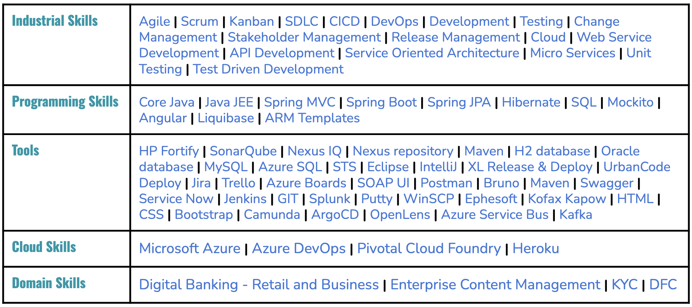
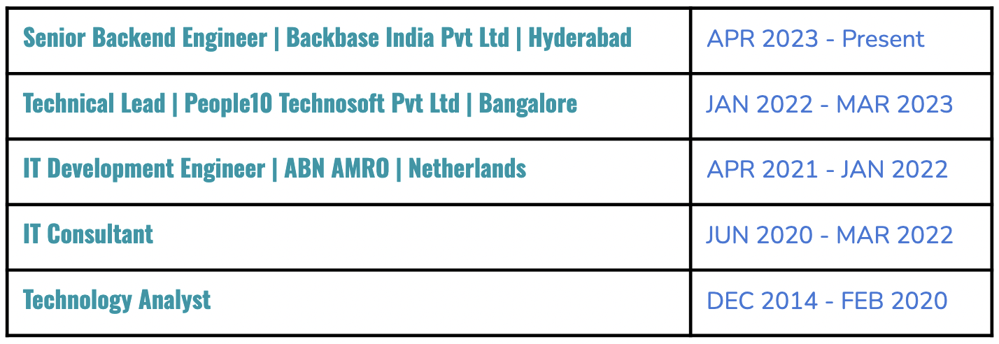

Coding my way to the Future
I am a passionate and skilled Backend Developer with a decade of experience in designing, developing, and maintaining robust and scalable server-side applications. I specialize in crafting high-performance backend systems that drive modern web and mobile applications, ensuring seamless user experiences. My expertise spans a variety of backend technologies, frameworks, and tools, and I’m driven by a continuous desire to learn and innovate.
My approach to backend development is centered on writing clean, efficient, and maintainable code while keeping scalability, security, and performance at the forefront of every project. I thrive on solving complex technical problems and building solutions that have a tangible impact on both the user and business goals.

